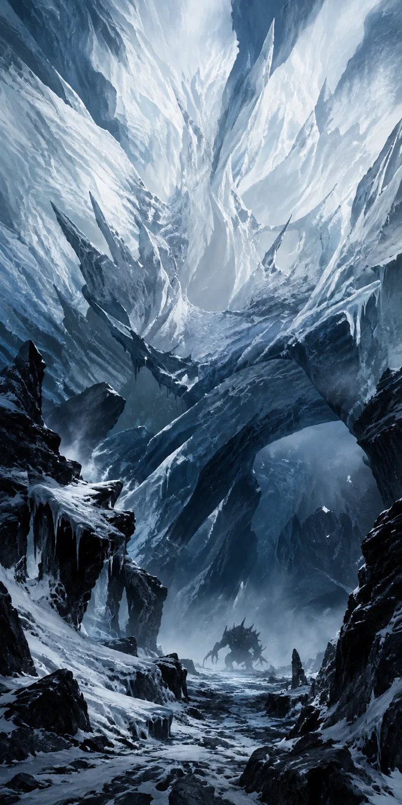
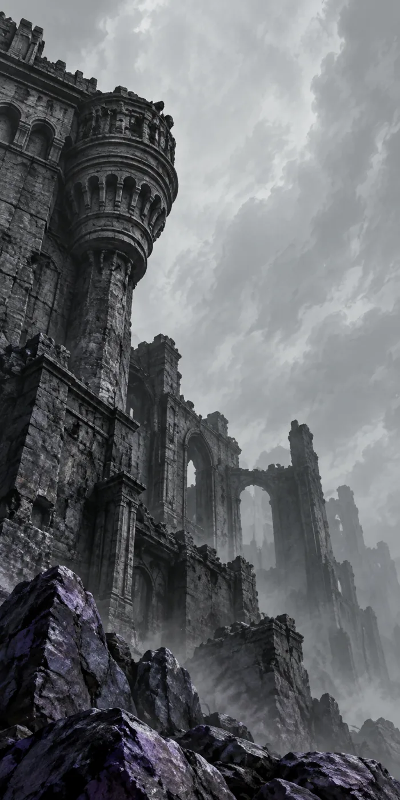
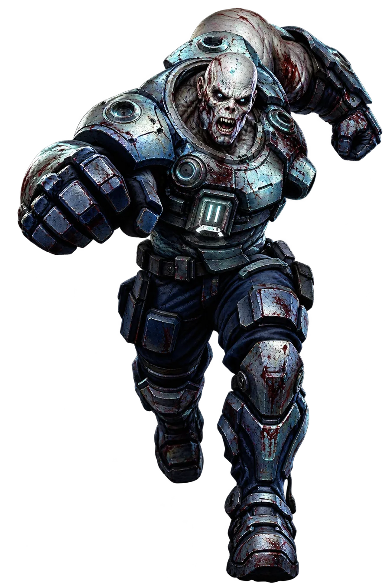
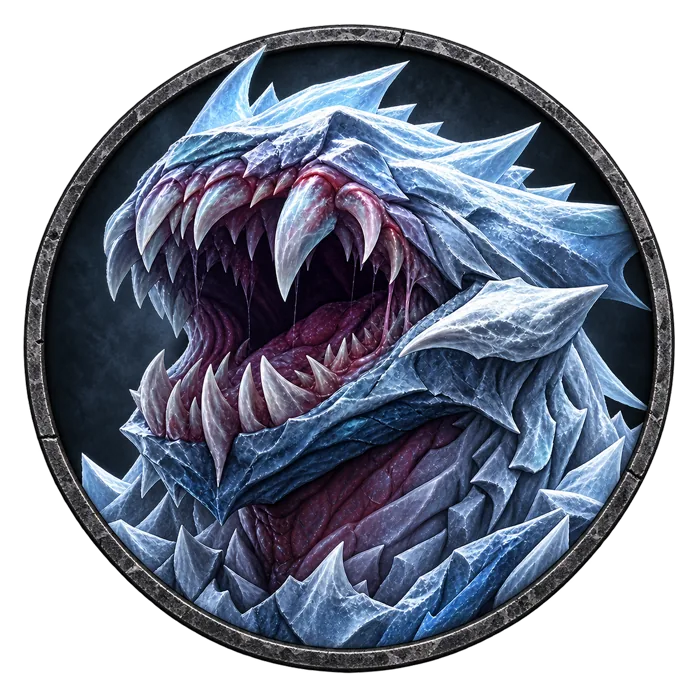
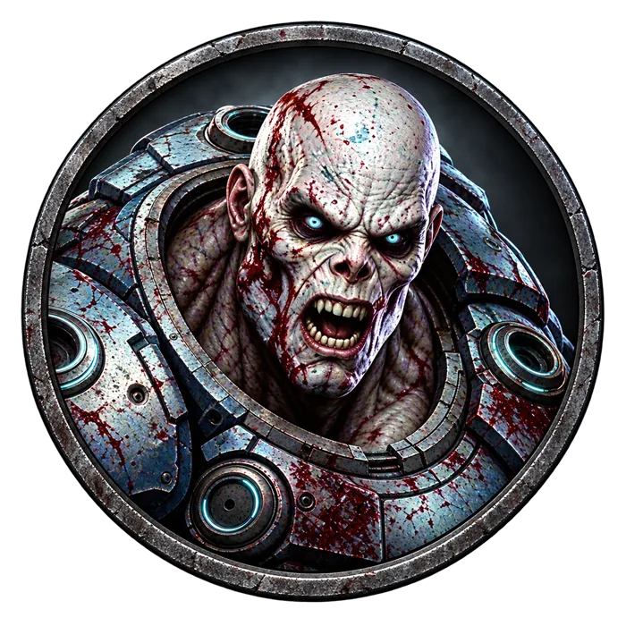
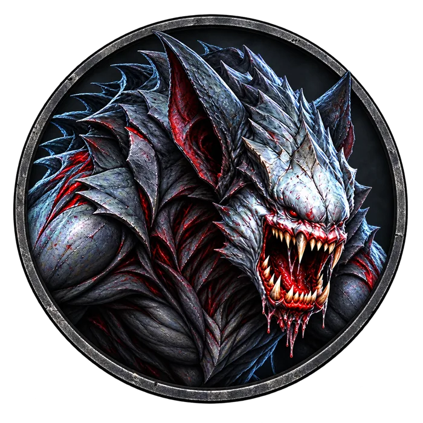

Comandante
Zumbi
A equipe original de elite virou o maior obstáculo da sobrevivência humana.
Ler maisComandante Zumbi é jogado com um líder que controla os zumbis, num modo de estratégia em tempo real.
Zumbis: o comandante é escolhido entre os jogadores e controla a horda. Conforme o tipo de mapa, surgem tarefas diferentes. Humanos: os sobreviventes restantes se unem contra os zumbis…

Novo mapa
Para romper o ponto mais alto do último jogo, o mapa Comandante Zumbi foi transformado. Os jogadores podem tirar vantagem do terreno.
Zumbis nas mãos do comandante: o grupo vai dobrar de tamanho, e os zumbis ficarão mais fortes.

Resistiu, matou
e morreu de vez

Oito zumbis,
um a um, abrem
a porta para
a aventura
A equipe original de elite se tornou o maior obstáculo da sobrevivência humana…
Ler maisCada zumbi tem habilidades únicas: salto longo, regeneração, camuflagem, grito — escolha qual liberar no momento certo do ataque.
04Habilidades
humanas
Zumbi forte
Habilidade de proteção: absorve dano por alguns segundos. Ideal para segurar o corredor.
Enquanto a produção de fogo continua, a vida diminui.
O súbito surgimento dos zumbis. O acampamento humano se armou até os dentes, naturalmente.
Ver detalhesCada zumbi também ganha uma pontuação de acordo com a variedade de sobreviventes que alcançar.

Mandíbula
Espectro

Couraça

Uivo
Gelo
Carniça
Sombra
Comandante